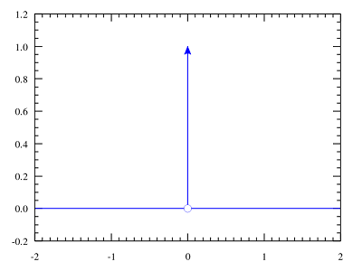

狄拉克δ函数(Dirac delta)
在卷积那篇文章中，已经提到了狄拉克δ函数的定义:
\[ delta (t) = \begin {cases} +\infty , t=0 \\ 0, t\neq 0 \end {cases} \]
\[ \int _{-\infty }^{\infty }\delta (t)dt = 1 \]

下面介绍它的一些性质:
对称性质
从δ函数的波形图(或者定义)可以简单看出，δ函数是偶函数，即:
\[ \delta (t) = \delta (-t) \]
缩放性质
设有常数a，令u = at，再依据δ函数的积分特性，有:
\[ dt = \frac {1}{a}du \]
\[ \int _{-\infty }^{\infty }\delta (at)dt = \int _{-\infty }^{\infty }\delta (u)\frac {1}{a}du = \frac {1}{a} \int _{-\infty }^{\infty }\delta (u)du = \frac {1}{a} \]
也即:
\[ \delta (at) = \frac {1}{a}\delta (t) \]
又因为它的对称性质，有:
\[ \delta (at) = \frac {1}{|a|}\delta (t) \]
代数性质
\[ t\delta (t) = 0 \]
这个太简单了，从基本定义出发可以很快看出来这个式子的正确性。
平移性质
\[ \int _{-\infty }^{\infty }f(t)\delta (t - T)dt = f(T) \]
在理解卷积 Convolution中有对这个式子的详细讨论。当然从δ函数的定义去理解这个式子也很简单。
δ函数的傅里叶变换
\[ \mathcal {F}[\delta (s)] = \int _{-\infty }^{\infty }e^{-2\pi ist}\delta (t) = 1 \]
因为只有当x等于0时，δ函数才非0(等于1)，所以这个式子的计算结果等于1。
傅里叶变换后是一个常数1，这个性质看起来就很特别。
狄拉克梳状函数(Dirac comb)
这个函数在电子工程electrical engineering中称为脉冲序列(impulse train)或采样函数(sampling function)。注意，有些文章会把它叫做Shah function。
它其实就是关于狄拉克δ函数的用周期T间隔的无穷级数(多个δ函数的合并)。(wiki原文是:A Dirac comb is an infinite series of Dirac delta functions spaced at intervals of T）
用图表示:

(图片来自wiki）
公式表示:
\[ III_{T}(t) = \sum _{k=-\infty }^{\infty }\delta (t - kT)\]
这个公式和图片完全对应。
下面介绍它的一些性质:
缩放性质
当T = 1（单位周期）时：
\[ III(t) = \sum _{k=-\infty }^{\infty }\delta (t - k)\]
这时再对t缩放a倍:
\[ III(at) = \sum _{k=-\infty }^{\infty }\delta (at - k)\]
现在搬出δ函数的对称性质公式:
\[ \delta (at) = \frac {1}{a}\delta (t) \]
\[ III(at) = \sum _{k=-\infty }^{\infty }\delta (at - k) \] \[ = \sum _{k=-\infty }^{\infty }\delta (a(t - \frac {k}{a})) \] \[ = \sum _{k=-\infty }^{\infty }\frac {1}{a}\delta (t - \frac {k}{a}) \]
\[ = \frac {1}{a}III_{\frac {1}{a}}(t)\]
也就是:
\[ III(at) = \frac {1}{a}III_{\frac {1}{a}}(t) \]
\[ III_{a}(t) = \frac {1}{a}III_{}(\frac {t}{a}) \]
傅里叶变换
\[ III_{a}(t) = \frac {1}{T}\sum _{k=-\infty }^{\infty }e^{2\pi is\frac {t}{T}} \]
博主将十分感谢对本文章的任意金额的打赏^_^